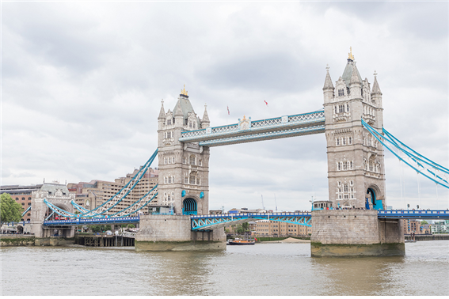
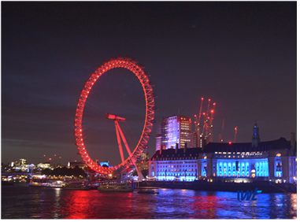
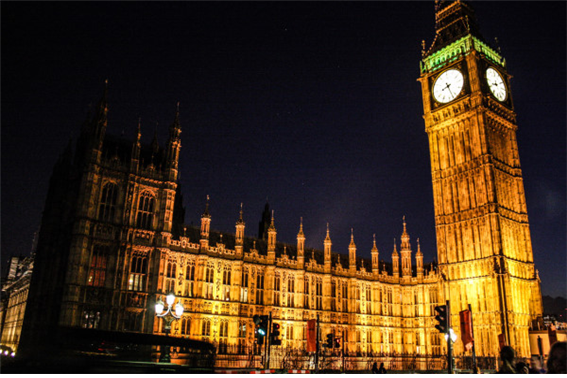

London
저는 어머니께서 영국을 좋아한 것이 원인인지는 정확히 모르겠지만 어려서부터 영국 건물들을 매우 좋아했습니다.
그래서 영국 런던의 관광명소를 직접 눈으로 보는 것이 꿈이기 때문에 제가 제일 보고 싶은 타워 브리지와 런던아이,
그리고 빅벤을 소개 겸 가상으로 가 보았을 때의 감상평을 애기해 보겠습니다.

먼저 타워 브리지입니다.
타워 브리지는 런던의 템스 강에 놓여 있는데 1894년에 건축되었다고 합니다.
밤에 불빛이 켜진 야경으로 봐도 이쁜 다리이지만, 날씨 좋은 아침이나 낮에 본 경치가 매우 이쁩니다.
철근의 하늘색 페인팅이 파란하늘과 잔잔한 호수와 어울러져 실제로 보았을 때 그림같은 자태가 정말 아름다웠습니다.

다음으로 런던 아이입니다.
런던 아이 또한 템스 강변에 위치하고 2000년에 밀레니엄을 기념해 건축되었다고 합니다.
타워 브리지와는 반대로 런던 아이는 야경이 정말 이뻤는데요.
밤이 되면 주기적으로 불빛 색깔이 바뀌어서 색이 바뀔때마다 새롭고 좋았습니다.

마지막으로 빅 벤입니다.
런던의 랜드마크인 시계탑으로 공식 명칭은 엘리자베스 타워입니다.
국회의 사당 동쪽 끝의 첨탑이고 1859년에 건축되었습니다.
사실 빅 벤이 제일 보고 싶었던 건물인데 실제로 보게 되어서 정말 좋았습니다.
빅벤의 야경이 제일 기억에 남고 아름다웠던 거 같습니다.
이 글을 보고 계신 여러분들께서도 런던을 꼭 가보셨으면 좋겠습니다!